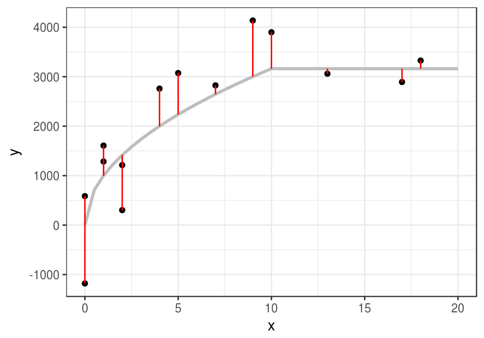

Chapter 1 Introducción
1.1 ¿Qué es aprendizaje de máquina (machine learning)?
Métodos computacionales para aprender de datos con el fin de producir reglas para mejorar el desempeño en alguna tarea o toma de decisión.
En este curso nos enfocamos en las tareas de aprendizaje supervisado, donde intentamos predecir o estimar una variable respuesta a partir de datos de entrada.
Ejemplos de tareas de aprendizaje:
- Predecir si un cliente de tarjeta de crédito va a caer en impago en los próximos tres meses.
- Reconocer palabras escritas a mano (OCR).
- Detectar llamados de ballenas en grabaciones de boyas.
- Estimar el ingreso mensual de un hogar a partir de las características de la vivienda, posesiones y equipamiento y localización geográfica.
- Dividir a los clientes de Netflix según sus gustos.
- Recomendar artículos a clientes de un programa de lealtad o servicio online.
Las razones usuales para intentar resolver estos problemas computacionalmente son diversas:
- Quisiéramos obtener una respuesta barata, rápida, automatizada, y con suficiente precisión. Por ejemplo, reconocer caracteres en una placa de coche de una fotografía se puede hacer por personas, pero eso es lento y costoso. Igual oír cada segundo de grabación de las boyas para saber si hay ballenas o no. Hacer mediciones directas del ingreso de un hogar requiere mucho tiempo y esfuerzo.
- Quisiéramos superar el desempeño actual de los expertos o de reglas simples utilizando datos: por ejemplo, en la decisión de dar o no un préstamo a un solicitante, puede ser posible tomar mejores decisiones con algoritmos que con evaluaciones personales o con reglas simples que toman en cuenta el ingreso mensual, por ejemplo.
- Queremos entender de manera más completa y sistemática el comportamiento de un fenómeno, identificando variables o patrones importantes.
Es posible aproximarse a todos estos problemas usando reglas (por ejemplo, si los pixeles del centro de la imagen están vacíos, entonces es un cero, si el crédito total es mayor al 50% del ingreso anual, declinar el préstamo, etc) Las razones para intentar usar aprendizaje para producir reglas en lugar de intentar construir estas reglas directamente son, por ejemplo:
- Cuando conjuntos de reglas creadas a mano se desempeñan mal (por ejemplo, para otorgar créditos, reconocer caracteres, etc.)
- Reglas creadas a mano pueden ser difíciles de mantener (por ejemplo, un corrector ortográfico.)
Ejemplo: reconocimiento de dígitos escritos a mano
¿Cómo reconocer los siguientes dígitos de manera automática?
En los datos tenemos los valores de cada pixel (los caracteres son imagenes de 16x16 pixeles), y una etiqueta asociada, que es el número que la imagen representa. Podemos ver las imágenes y las etiquetas:
library(tidyverse)
zip_train <- read_csv(file = 'datos/zip-train.csv')
muestra_1 <- sample_n(zip_train, 10)
graficar_digitos(muestra_1)
muestra_2 <- sample_n(zip_train, 10)
graficar_digitos(muestra_2)
Los 16x16=256 están escritos acomodando las filas de la imagen en
vector de 256 valores (cada renglón de zip_train). Un dígito entonces
se representa como in vector de 256 números:
dim(zip_train)## [1] 7291 257as.numeric(zip_train[1,])## [1] 6.000 -1.000 -1.000 -1.000 -1.000 -1.000 -1.000 -1.000 -0.631 0.862
## [11] -0.167 -1.000 -1.000 -1.000 -1.000 -1.000 -1.000 -1.000 -1.000 -1.000
## [21] -1.000 -1.000 -1.000 -0.992 0.297 1.000 0.307 -1.000 -1.000 -1.000
## [31] -1.000 -1.000 -1.000 -1.000 -1.000 -1.000 -1.000 -1.000 -1.000 -0.410
## [41] 1.000 0.986 -0.565 -1.000 -1.000 -1.000 -1.000 -1.000 -1.000 -1.000
## [51] -1.000 -1.000 -1.000 -1.000 -0.683 0.825 1.000 0.562 -1.000 -1.000
## [61] -1.000 -1.000 -1.000 -1.000 -1.000 -1.000 -1.000 -1.000 -1.000 -0.938
## [71] 0.540 1.000 0.778 -0.715 -1.000 -1.000 -1.000 -1.000 -1.000 -1.000
## [81] -1.000 -1.000 -1.000 -1.000 -1.000 0.100 1.000 0.922 -0.439 -1.000
## [91] -1.000 -1.000 -1.000 -1.000 -1.000 -1.000 -1.000 -1.000 -1.000 -1.000
## [101] -0.257 0.950 1.000 -0.162 -1.000 -1.000 -1.000 -0.987 -0.714 -0.832
## [111] -1.000 -1.000 -1.000 -1.000 -1.000 -0.797 0.909 1.000 0.300 -0.961
## [121] -1.000 -1.000 -0.550 0.485 0.996 0.867 0.092 -1.000 -1.000 -1.000
## [131] -1.000 0.278 1.000 0.877 -0.824 -1.000 -0.905 0.145 0.977 1.000
## [141] 1.000 1.000 0.990 -0.745 -1.000 -1.000 -0.950 0.847 1.000 0.327
## [151] -1.000 -1.000 0.355 1.000 0.655 -0.109 -0.185 1.000 0.988 -0.723
## [161] -1.000 -1.000 -0.630 1.000 1.000 0.068 -0.925 0.113 0.960 0.308
## [171] -0.884 -1.000 -0.075 1.000 0.641 -0.995 -1.000 -1.000 -0.677 1.000
## [181] 1.000 0.753 0.341 1.000 0.707 -0.942 -1.000 -1.000 0.545 1.000
## [191] 0.027 -1.000 -1.000 -1.000 -0.903 0.792 1.000 1.000 1.000 1.000
## [201] 0.536 0.184 0.812 0.837 0.978 0.864 -0.630 -1.000 -1.000 -1.000
## [211] -1.000 -0.452 0.828 1.000 1.000 1.000 1.000 1.000 1.000 1.000
## [221] 1.000 0.135 -1.000 -1.000 -1.000 -1.000 -1.000 -1.000 -0.483 0.813
## [231] 1.000 1.000 1.000 1.000 1.000 1.000 0.219 -0.943 -1.000 -1.000
## [241] -1.000 -1.000 -1.000 -1.000 -1.000 -0.974 -0.429 0.304 0.823 1.000
## [251] 0.482 -0.474 -0.991 -1.000 -1.000 -1.000 -1.000¿Cómo combinamos esta información en un cálculo para reconocer el dígito computacionalmente? Un enfoque más utilizado anteriormente para resolver este tipo de problemas consistía en procesar estas imágenes con filtros hechos a mano (por ejemplo, calcular cuántos pixeles están prendidos, si existen ciertas curvas o trazos) para después construir reglas para determinar cada dígito. Actualmente, el enfoque más exitoso es utilizar métodos de aprendizaje que aprendan automáticamente esos filtros y esas reglas basadas en filtros (redes convolucionales).
Ejemplo: predecir ingreso trimestral
Consideramos la medición de ingreso total trimestral para una muestra de hogares de la encuesta de ENIGH. Cada una de estas mediciones es muy costosa en tiempo y dinero.
dat_ingreso <- read_csv(file = 'datos/enigh-ejemplo.csv')
head(dat_ingreso) %>%
select(TAM_HOG, INGCOR, NOM_ENT_1, FOCOS,
PISOS, marginación, tamaño_localidad) %>%
knitr::kable()| TAM_HOG | INGCOR | NOM_ENT_1 | FOCOS | PISOS | marginación | tamaño_localidad |
|---|---|---|---|---|---|---|
| 4 | 30238.13 | Jalisco | 11 | 3 | Muy bajo | De 15 mil a 100 mil |
| 3 | 61147.41 | México | 10 | 2 | Bajo | De 15 mil a 100 mil |
| 2 | 6170.21 | Puebla | 1 | 1 | Alto | De 2500 a 15 mil |
| 2 | 14639.79 | Distrito Federal | 5 | 2 | Muy bajo | 100 mil o más |
| 1 | 40638.35 | Chihuahua | 8 | 3 | Muy bajo | De 15 mil a 100 mil |
| 2 | 21172.35 | Baja California | 4 | 2 | Muy bajo | 100 mil o más |
ggplot(dat_ingreso, aes(x=INGTOT)) +
geom_histogram(bins = 100) +
scale_x_log10()
Pero quizá podemos usar otras variables más fácilmente medibles para predecir el ingreso de un hogar. Por ejemplo, si consideramos el número de focos en la vivienda:
ggplot(dat_ingreso, aes(x = FOCOS, y = INGTOT)) +
geom_point() +
scale_y_log10() + xlim(c(0,50))
O el tamaño de la localidad:
ggplot(dat_ingreso, aes(x = tamaño_localidad, y = INGTOT)) +
geom_boxplot() +
scale_y_log10() 
En algunas encuestas se pregunta directamente el ingreso mensual del hogar. La respuesta es generalmente una mala estimación del verdadero ingreso, por lo que actualmente se prefiere utilizar aprendizaje para estimar a partir de otras variables que son más fielmente reportadas por encuestados (años de estudio, ocupación, número de focos en el hogar, etc.)
1.2 Aprendizaje Supervisado
Por el momento nos concentramos en problemas supervisados de regresión, es decir predicción de variables numéricas.
¿Cómo entendemos el problema de predicción?
1.2.1 Proceso generador de datos (modelo teórico)
Para entender lo que estamos intentando hacer, pensaremos en términos de modelos probabilísticos que generan los datos. La idea es que estos representan los procesos que generan los datos o las observaciones.
Si \(Y\) es la respuesta
que queremos predecir, y \(X\) es una entrada que queremos usar para predecir
\(Y\),
consideramos que las variables aleatorias \(Y\) y \(X\) están relacionadas como sigue:
\[Y=f(X)+\epsilon,\]
donde \(\epsilon\) es una término de error aleatorio que no depende de \(X\), y
que tiene valor esperado \(\textrm{E}(\epsilon)=0\).
- \(f\) expresa la relación sistemática que hay entre \(Y\) y \(X\): para cada valor posible de \(X\), la contribución de \(X\) a \(Y\) es \(f(X)\).
- Pero \(X\) no determina a \(Y\), como en el ejemplo anterior de rendimiento de coches. Entonces agregamos una error aleatorio \(\epsilon\), con media cero (si la media no es cero podemos agregar una constante a \(f\)), que no contiene información acerca de \(X\) (independiente de \(X\)).
- \(\epsilon\) representa, por ejemplo, el efecto de variables que no hemos medido o procesos aleatorios que determinan la respuesta.
- La función \(f\) típicamente es complicada y desconocida.
Ejemplo
Vamos a usar simulación para entender estas ideas: supongamos que \(X\) es el número de años de estudio de una persona y \(Y\) es su ingreso mensual. En primer lugar, estas son el número de años de estudio de 8 personas:
x <- c(1,7,10,0,0,5,9,13,2,4,17,18,1,2)Ahora supondremos que la dependencia de Y de X está dada por \(Y=f(X)+\epsilon\) por una función \(f\) que no conocemos (esta función está determinada por el fenómeno)
f <- function(x){
ifelse(x < 10, 1000*sqrt(x), 1000*sqrt(10))
}El ingreso no se determina únicamente por número de años de estudio. Suponemos entonces que hay algunas variables adicionales que perturban los niveles de \(f(X)\) por una cantidad aleatoria. Los valores que observamos de \(Y\) están dados entonces por \(Y=f(X)+\epsilon\).
Entonces podríamos obtener, por ejemplo:
x_g <- seq(0,20,0.5)
y_g <- f(x_g)
dat_g <- data.frame(x = x_g, y = y_g)
set.seed(281)
error <- rnorm(length(x), 0, 500)
y <- f(x) + error
datos <- data_frame(x = x, y = y)
datos$y_media <- f(datos$x)
ggplot(datos, aes(x = x, y = y)) + geom_point() +
geom_line(data=dat_g, colour = 'gray', size = 1.1) +
geom_segment(aes(x = x, xend = x, y = y, yend = y_media), col='red')
En problemas de aprendizaje nunca conocemos esta \(f\) verdadera, aunque quizá sabemos algo acerca de sus propiedades (por ejemplo, continua, de variación suave). Lo que tenemos son los datos, que también podrían haber resultado en (para otra muestra de personas, por ejemplo):
set.seed(28015)
error <- rnorm(length(x), 0, 500)
y <- f(x) + error
datos <- data.frame(x = x, y = y)
ggplot(datos, aes(x = x, y = y)) + geom_point() 
La siguiente observación nos da una idea de lo que intentamos hacer, aunque todavía es vaga y requiere refinamiento:
Bajo los supuestos del modelo \(Y=f(X)+\epsilon\), aprender de los datos significa intentar recuperar o estimar la forma de la función \(f\) que no conocemos. \(f\) representa la relación sistemática entre \(Y\) y \(X\).
¿Qué tan bien podemos estimar esa \(f\) que no conocemos, con los datos disponibles? ¿Qué significa estimar bien? Incluso este ejemplo tan simple muestra las dificultades que vamos a enfrentar, y la importancia de determinar con cuidado qué tanta información tenemos, y qué tan buenas pueden ser nuestras predicciones.
1.3 Predicciones
La idea es entonces producir una estimación de \(f\) que nos permita hacer predicciones.
Si denotamos por \(\hat{f}\) a una estimación de \(f\) construida a partir de los datos, podemos hacer predicciones aplicando \(\hat{f}\) a valores de \(X\). La predicción de Y la denotamos por \(\hat{Y}\), y \[\hat{Y}=\hat{f}(X).\] El error de predicción (residual) está dado por el valor observado menos la predicción: \[Y-\hat{Y}.\]
En nuestro ejemplo anterior, podríamos construir, por ejemplo, una recta ajustada por mínimos cuadrados:
curva_1 <- geom_smooth(data=datos,
method = "lm", se=FALSE, color="red", formula = y ~ x, size = 1.1)ggplot(datos, aes(x = x, y = y)) + geom_point() + curva_1
En este caso \(\hat{f}\) es una recta, y la podemos usar para hacer predicciones. Por ejemplo, si tenemos una observación con \(x_0=8\) años de estudio, nuestra predicción del ingreso \(\hat{y}=\hat{f}(8)\) sería
lineal <- lm(y ~ x,data = datos)
pred_1 <- predict(lineal, newdata = data.frame(x=8))
pred_1## 1
## 2193.561ggplot(datos, aes(x = x, y = y)) + geom_point() + curva_1 +
geom_segment(x = 0, xend = 8, y = pred_1, yend = pred_1, colour = 'salmon') +
geom_segment(x = 8, xend = 8, y = 0, yend = pred_1, colour = 'salmon') +
annotate('text', x = 0.5, y = pred_1 + 100, label = round(pred_1, 1)) +
geom_point( x= 8, y =3200, col='green', size = 4)
Si observamos que para esta observación con \(x_0=8\), resulta que el correspondiente ingreso es \(y_0=3200\), entonces el error sería
y_0 <- 3200
y_0 - pred_1## 1
## 1006.439En aprendizaje buscamos que estos errores sean lo más cercano a cero que sea posible.
1.4 Cuantificación de error o precisión
El elemento faltante para definir la tarea de aprendizaje supervisado es qué significa aproximar bien a \(f\), o tener predicciones precisas. Para esto definimos una función de pérdida:
\[L(Y, \hat{f}(X)),\]
que nos dice cuánto nos cuesta hacer la predicción \(\hat{f}(X)\) cuando el verdadero valor es \(Y\) y las variables de entrada son \(X\). Una opción conveniente para problemas de regresión es la pérdida cuadrática:
\[L(Y, \hat{f}(X)) = (Y - \hat{f}(X))^2\] Esta es una cantidad aleatoria, de modo que en algunos casos este error puede ser más grande o más chico. Usualmente buscamos una \(\hat{f}\) de modo que el error promedio sea chico:
\[Err = E[(Y - \hat{f}(X))^2]\]
Nota: Intenta demostrar que bajo error cuadrático medio y suponiendo el modelo aditivo \(Y=f(X)+\epsilon\), el mejor predictor de \(Y\) es \(f(x)= E[Y|X=x]\). Es decir: lo que nos interesa es aproximar lo mejor que se pueda la esperanza condicional
1.5 Tarea de aprendizaje supervisado
Ahora tenemos los elementos para definir con precisión el problema de aprendizaje supervisado.
Consideramos un proceso generador de datos \((X,Y)\). En primer lugar, tenemos datos de los que vamos a aprender.
Supongamos que tenemos un conjunto de datos etiquetados (generados según \((X,Y)\))
\[{\mathcal L}=\{ (x^{(1)},y^{(1)}),(x^{(2)},y^{(2)}), \ldots, (x^{(N)}, y^{(N)}) \}\] que llamamos conjunto de entrenamiento. Nótese que usamos minúsculas para denotar observaciones particulares de \((X,Y)\).
Un algoritmo de aprendizaje es una regla que asigna a cada conjunto de entrenamiento \({\mathcal L}\) una función \(\hat{f}\):
\[{\mathcal L} \to \hat{f}.\]
Para medir el desempeño de un predictor particular \(\hat{f}\) queremos ver cómo se va a comportar haciendo predicciones que no fueron vistos en el entrenamiento. Esto es porque esta es justamente la tarea que queremos resolver:
- Tenemos un conjunto de datos de entrenamiento, y construimos nuestro predictor \(\hat{f}\).
- En el futuro llegan nuevos datos, y queremos aplicar nuestro predictor para hacer predicciones.
Entonces, el desempeño del predictor particular \(\hat{f}\) se mide como sigue: si en el futuro observamos otra muestra \({\mathcal T}\) (que podemos llamar muestra de prueba)
\[{\mathcal T}=\{ (x_0^{(1)},y_0^{(1)}),(x_0^{(2)},y_0^{(2)}), \ldots, (x_0^{(m)}, y_0^{(m)}) \}\]
entonces decimos que el error de predicción (cuadrático) de \(\hat{f}\) para el ejemplo \((x_0^{(j)},y_0^{(j)})\) está dado por \[(y_0^{(j)} - \hat{f}(x_0^{(j)}))^2\]
y el error sobre la muestra \({\mathcal T}\) es
\[\widehat{Err} = \frac{1}{m}\sum_{j=1}^m (y_0^{(j)} - \hat{f}(x_0^{(j)}))^2\]
Es muy importante considerar dos muestras separadas en esta definición:
No tiene mucho sentido medir el desempeño de nuestro algoritmo sobre la muestra de entrenamiento, pues el algoritmo puede ver las etiquetas.
Considerar el error sobre una muestra diferente a la de entrenamiento nos permite evaluar si nuestro algoritmo generaliza, que se puede pensar como “verdadero” aprendizaje.
Nótese que \(\widehat{Err}\) es una estimación de \(Err\) (por la ley de los grandes números, si \({\mathcal T}\) es muestra i.i.d. de \((X,Y)\)).
También consideramos el error de entrenamiento, dado por
\[\overline{err} = \frac{1}{N}\sum_{i=1}^N (y^{(i)} - \hat{f}(x^{(i)}))^2\]
Nótese sin embargo que el error de entrenamiento no necesariamente es una buena estimación del error de prueba, que mide el desempeño verdadero del modelo. La razón es que modelos suficientemente flexibles pueden memorizar los datos de entrenamiento en lugar de aprender a generalizar de ellos. Un error de entrenamiento bajo no garantiza un desempeño bueno en el futuro. Discutiremos este punto más adelante.
1.5.0.1 Ejemplo
En el ejemplo que hemos estado usando, ¿que curva preferirías para predecir, la gris, la roja o la azul? ¿Cuál tiene menor error de entrenamiento?
set.seed(280572)
error <- rnorm(length(x), 0, 500)
y <- f(x) + error
datos_entrena <- data.frame(x=x, y=y)
head(datos_entrena)## x y
## 1 1 86.22033
## 2 7 2353.75863
## 3 10 3078.71029
## 4 0 -397.80229
## 5 0 424.73363
## 6 5 3075.92998curva.1 <- geom_smooth(data=datos_entrena,
method = "loess", se=FALSE, color="gray", span=1, size=1.1)
curva.2 <- geom_smooth(data=datos_entrena,
method = "loess", se=FALSE, color="red", span=0.3, size=1.1)
curva.3 <- geom_smooth(data=datos_entrena,
method = "lm", se=FALSE, color="blue", size=1.1)ggplot(datos_entrena, aes(x=x, y=y)) + geom_point() + curva.1 + curva.2 + curva.3
Calculamos los errores de entrenamiento de cada curva:
mod_rojo <- loess(y ~ x, data = datos_entrena, span=0.3)
mod_gris <- loess(y ~ x, data = datos_entrena, span=1)
mod_recta <- lm(y ~ x, data = datos_entrena)
df_mods <- data_frame(nombre = c('recta', 'rojo','gris'))
df_mods$modelo <- list(mod_recta, mod_rojo, mod_gris)error_f <- function(df){
function(mod){
preds <- predict(mod, newdata = df)
round(sqrt(mean((preds-df$y)^2)))
}
}
error_ent <- error_f(datos_entrena)
df_mods <- df_mods %>%
mutate(error_entrena = map_dbl(modelo, error_ent))
df_mods## # A tibble: 3 x 3
## nombre modelo error_entrena
## <chr> <list> <dbl>
## 1 recta <S3: lm> 782
## 2 rojo <S3: loess> 189
## 3 gris <S3: loess> 389El error de entrenamiento es considerablemente menor para la curva roja, y es más grande para la recta.
Sin embargo, consideremos que tenemos una nueva muestra (de prueba).
set.seed(218052272)
x_0 <- sample(0:13, 100, replace = T)
error <- rnorm(length(x_0), 0, 500)
y_0 <- f(x_0) + error
datos_prueba <- data_frame(x = x_0, y = y_0)
datos_prueba## # A tibble: 100 x 2
## x y
## <int> <dbl>
## 1 9 2156.
## 2 11 3227.
## 3 3 2382.
## 4 10 3482.
## 5 7 2733.
## 6 7 2326.
## 7 12 3464.
## 8 0 -564.
## 9 10 3296.
## 10 0 366.
## # ... with 90 more rowserror_p <- error_f(datos_prueba)
df_mods <- df_mods %>%
mutate(error_prueba = map_dbl(modelo, error_p))
df_mods## # A tibble: 3 x 4
## nombre modelo error_entrena error_prueba
## <chr> <list> <dbl> <dbl>
## 1 recta <S3: lm> 782 801
## 2 rojo <S3: loess> 189 628
## 3 gris <S3: loess> 389 520Observaciones
- En la tarea de aprendizaje estadístico, las dos partes, entrenamiento y prueba, son cruciales. Una no tiene sentido sin la otra.
- Si no hacemos entrenamiento, no podemos construir modelos que respondan a los datos. Si no hacemos prueba, no podemos saber si nuestro modelo ajustado en entrenamiento es bueno o malo.
El mejor modelo entrenamiento es uno que “sobreajusta” a los datos, pero es el peor con una muestra de prueba. La curva roja aprende del una componente de ruido del modelo - lo cual realmente no es aprendizaje.
El modelo de la recta no es bueno en entrenamiento ni en prueba. Este modelo no tiene la capacidad para aprender de la señal en los datos.
El mejor modelo en la muestra de prueba es uno que está entre la recta y la curva roja en términos de flexibilidad.
Nuestra intuición para escoger el modelo gris desde el principio se refleja en que generaliza mejor que los otros, y eso a su vez se refleja en un error de prueba más bajo.
1.6 ¿Por qué tenemos errores?
¿De dónde provienen los errores en la predicción? Si establemos que el error es una función creciente de \(Y-\hat{Y}\), vemos que \[ Y-\hat{Y} = f(X) + \epsilon - \hat{f}(X)= (f(X) - \hat{f}(X)) + \epsilon,\] donde vemos que hay dos componentes que pueden hacer grande a \(Y-\hat{Y}\):
- La diferencia \(f(X) - \hat{f}(X)\) está asociada a error reducible, pues depende de qué tan bien estimemos \(f(X)\) con \(\hat{f}(X)\)
- El error aleatorio \(\epsilon\), asociado a error irreducible.
Cualquiera de estas dos cantidades pueden hacer que nuestras predicciones no sean precisas.
En nuestro ejemplo anterior, el error reducible:
- Es grande para el modelo rojo, pues responde demasiado fuerte a ruido en los datos (tiene varianza alta).
- Es grande para el modelo de la recta, pues no tiene capacidad para acercarse a la verdadera curva (está sesgado).
En aprendizaje supervisado, nuestro objetivo es reducir el error reducible tanto como sea posible (obtener la mejor estimación de \(f\)). No podemos hacer nada acerca del error irreducible, pues este se debe a aleatoriedad en el fenómeno o a variables que no conocemos.
Notación
Las observaciones o datos que usaremos para construir nuestras estimaciones las denotamos como sigue.
Cada observación (o caso, o ejemplo) está dada por el valor de una variable de entrada \(X\) y un valor de la variable de salida \(Y\). Cuando tenemos \(N\) ejemplos de entrenamiento, los escribimos como los pares \[(x^{(1)},y^{(1)}), (x^{(2)},y^{(2)}) \ldots, (x^{(N)},y^{(N)})\]. Cuando los datos de entrada contienen \(p\) variables o atributos, escribimos \[x^{(i)} = (x_1^{(i)}, x_2^{(i)},\ldots, x_p^{(i)})\]
Escribimos también la matriz de entradas de dimensión Nxp: \[\underline{X} = \left ( \begin{array}{cccc} x_1^{(1)} & x_2^{(1)} & \ldots & x_p^{(1)} \\ x_1^{(2)} & x_2^{(2)} & \ldots & x_p^{(2)}\\ \vdots & \vdots & & \vdots \\ x_1^{(N)} & x_2^{(N)} & \ldots & x_p^{(N)} \\ \end{array} \right)\] y \[\underline{y} =(y^{(1)},y^{(2)}, \ldots, y^{(N)})^t.\]
Adicionalmente, usamos la notación
\[{\mathcal L}=\{ (x^{(1)},y^{(1)}), (x^{(2)},y^{(2)}), \ldots, (x^{(N)},y^{(N)}) \}\]
para denotar al conjunto de datos con los que construimos nuestro modelo. A este conjunto le llamaremos conjunto o muestra de entrenamiento (learning set)
1.7 Resumen
Aprendizaje de máquina: algoritmos que aprenden de los datos para predecir cantidades numéricas, o clasificar (aprendizaje supervisado), o para encontrar estructura en los datos (aprendizaje no supervisado).
- En aprendizaje supervisado, el esquema general es:
- Un algoritmo aprende de una muestra de entrenamiento \({\mathcal L}\), que es generada por el proceso generador de datos que nos interesa. Eso quiere decir que produce una función \(\hat{f}\) (a partir de \({\mathcal L}\)) que nos sirve para hacer predicciones \(x \to \hat{f}(x)\) de \(y\)
- El error de predicción del algoritmo es \(Err\), que mide en promedio qué tan lejos están las predicciones de valores reales.
- Para estimar esta cantidad usamos una muestra de prueba \({\mathcal T}\), que es independiente de \({\mathcal L}\).
- Esta es porque nos interesa el desempeño futuro de \(\hat{f}\) para nuevos casos que el algoritmo no ha visto (esto es aprender).
El error en la muestra de entrenamiento no necesariamente es buen indicador del desempeño futuro de nuestro algoritmo.
Para obtener las mejores predicciones posibles, es necesario que el algoritmo sea capaz de capturar patrones en los datos, pero no tanto que tienda a absorber ruido en la estimación - es un balance de complejidad y rigidez. En términos estadísticos, se trata de un balance de varianza y sesgo.